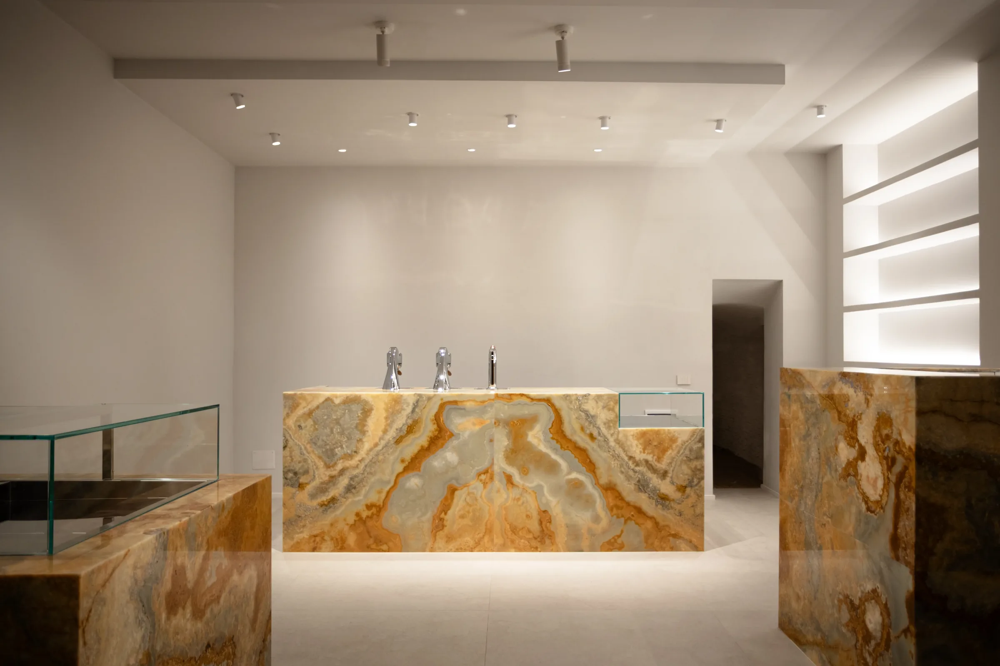
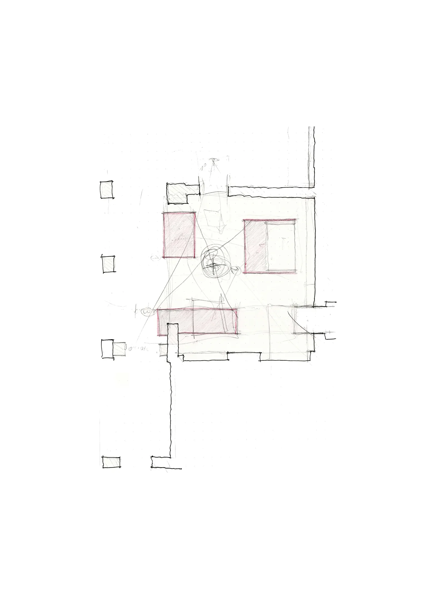
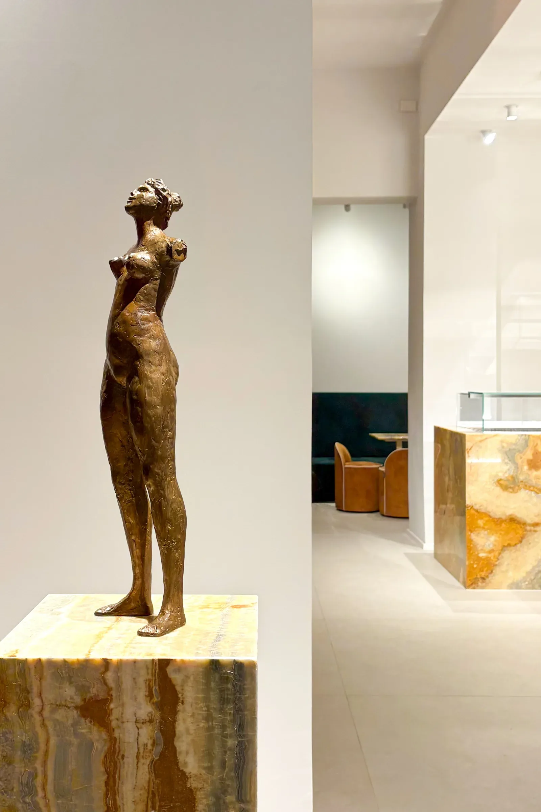
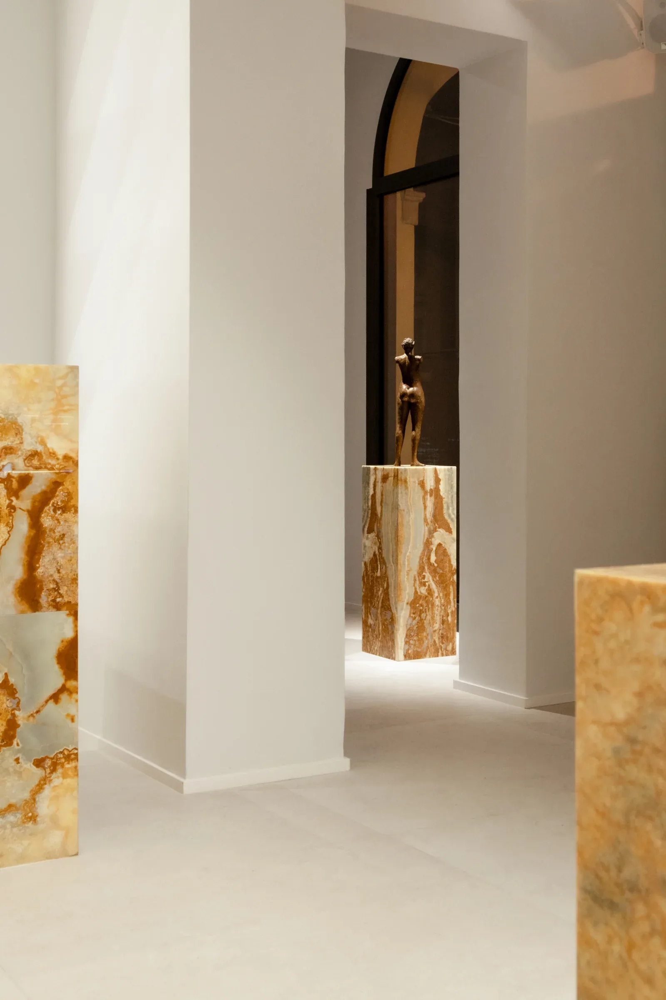
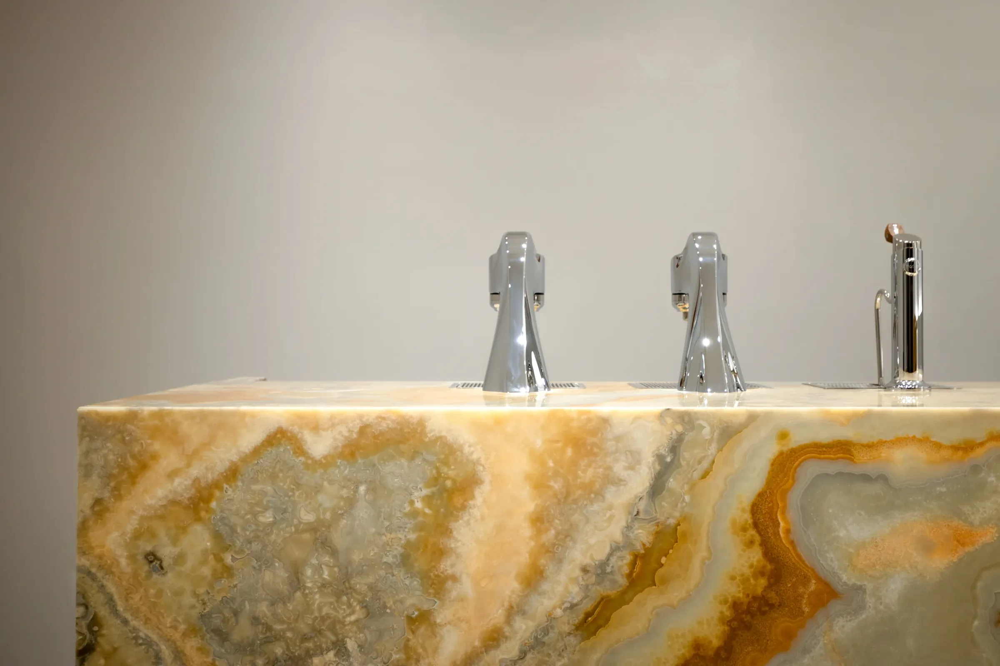

1 / 7
Anita
Bar and restaurant
Corso Canalgrande, Modena, Italy
2025
Bar and restaurant
Corso Canalgrande, Modena, Italy
2025
The counter and a few onyx volumes, plinths for sculptures, define the room.
Samuele SilvestriArchitect
Via Asiago 58, 41125 Modena
info@samuelesilvestriarchitetto.com
+39 366 493 8286
Instagram Order of Architects of Modena, no. 1437 – section A
VAT no. IT04180440366 Privacy (in Italian)






